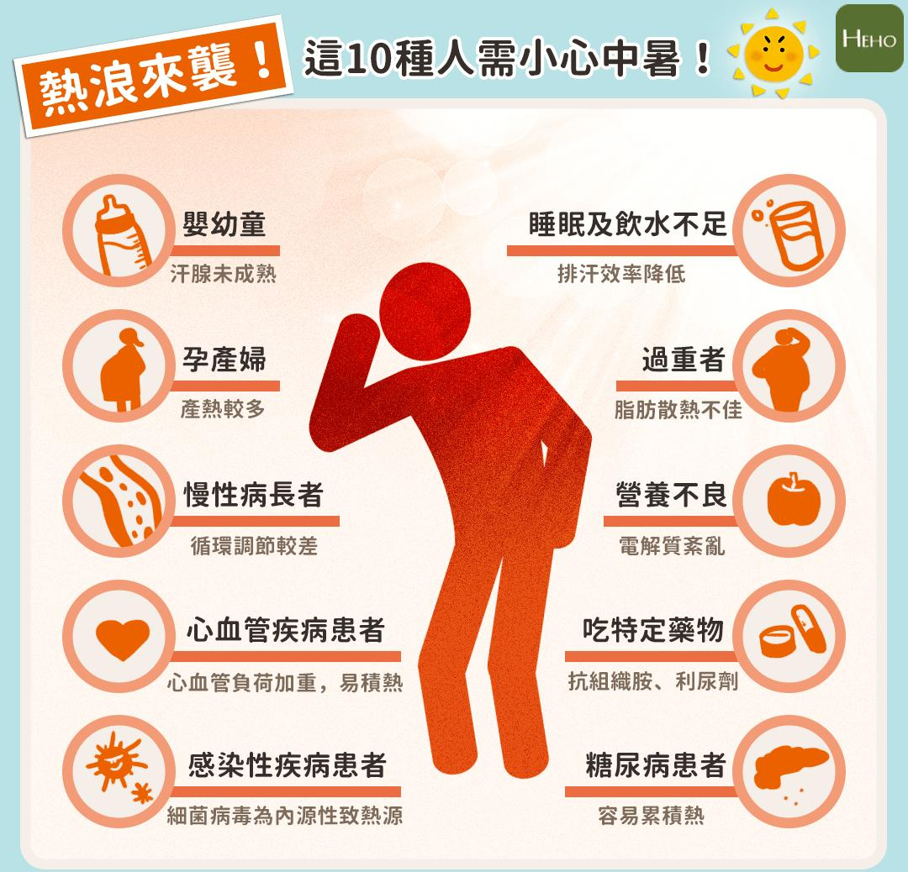

月號－健康大小事
月號－健康大小事|
時序進入高溫炎熱的夏天，面對節節飆升的氣溫，你做好抗暑準備了嗎？為避免熱衰竭、熱痙攣、熱疲勞等熱傷害發生，日常生活中除了勤於補水、避免烈日外出，以下條列出中暑時必須做和不要做的7件事，提早為即將到來的炎夏做好準備，防範熱傷害。 千萬別小看中暑！通常大眾所認知的中暑，是炎熱天氣所產生的身體不適，但醫學術上的中暑(heat stroke)，是身體散熱機制失去控制所導致的致死性熱病。在攝氏34、35度以上的高溫中活動時，此時水份流失卻未能及時補充，持續流汗就會造成身體脫水和電解質缺乏，進而促使身體散熱機制崩潰。 中暑症狀有哪些？ 中暑依嚴重度可分3個階段，依序為熱痙攣、熱衰竭、熱中暑，其差異如下: 你是中暑高危險群嗎？ 夏天天氣炎熱，氣溫動輒高達攝氏37、38度，當氣溫高於皮膚溫度，不可能散熱降溫，如果不知道要適度休息、確實遮陽或補充水份，就可能發生中暑或熱衰竭，其中又以這10種人最容易發生。 | |
|  | |
當體溫超過正常範圍(攝氏38度)，就算是嚴重情況，需要送醫治療，尤其是體溫高過40℃，或是產生昏迷、癲癇，這時死亡的機會就會很高，需要立刻送醫處理。面對中暑病人，有「7要」和「7不要」的處理準則。
中暑時7件事必須要做
1.立刻把中暑的人移到通風涼快的地方，移除過多的衣物，把領口打開。
2.如果會嘔吐，讓他側躺休息。
3.在報案後、等待119救援，或在送醫的途中，應持續讓中暑的人平躺休息，保持鎮定，灑水、使用水袋降溫、吹電扇或手動扇風。
4.若人很清醒、喝水不會吐，可補充水份和鹽份、或是梅子(含有高量鹽分)，可盡早持續進行；但若人躁動、意識不清，吃東西或喝水可能會嗆到，吸入到肺部產生肺炎，這時候則不可餵食。
4.為了讓囤積在下半身的血液容易回到心臟，可以在他倒下的時候，用東西把腳和腿墊高。
6.如果中暑者發生癲癇，不要硬塞東西到他嘴裡，只要保護他躺在柔軟的地方，避免跌倒或撞到頭，並且努力幫忙降溫。
7.如果體溫低於攝氏36度就不需再繼續降溫。
中暑時7件事不要做
1.如果出現前述中暑症狀，不應繼續工作、或持續待在悶熱環境，應盡快到通風好、涼快的地方。
2.不可單純補充白開水，同時也要補充電解質(鹽)，ex:運動飲料。
3.在腋下或大腿內側放冷水袋，避免直接把冰塊放在皮膚上，會造成局部凍傷。
4.勿飲酒、咖啡及茶類製品，此類飲品會利尿，讓身體脫水的情況更嚴重。
5.勿用酒精擦拭身體！酒精會讓血管收縮，反而不容易快速帶走身體裡的熱量。
6.當中暑的人叫不醒，無法溝通，這時勉強喝水會增加嗆到、吸入性肺炎的機會，所以不應該進食；若還能夠反應，可嘗試使用吸管或小口喝水，但出現大咳或嘔吐的情況，就不要再從嘴巴餵食物或灌水。
7.不需吃退燒藥，因中暑的問題是太多熱量無法散出，與感染造成的發燒不同，吃退燒藥無效。
中暑會出現哪些危險和併發症？
出現中暑症狀時，及早降溫和送醫非常重要，因為腦或其他器官在高溫的時間越久，全身的細胞會被高熱情況給損壞，器官功能會很難恢復，嚴重甚至會引發多重器官衰竭，出現心、肝、腎的衰竭、心肌梗塞、急性呼吸窘迫、橫紋肌溶解症、瀰漫性血管內凝血等情形導致死亡。
而橫紋肌溶解症(Rhabdomyolysis)是指骨骼肌(橫紋肌)的肌纖維膜發生急速的損傷，導致肌肉細胞壞死、細胞膜破裂，而肌肉細胞釋出大量鉀離子，濃度過高將造成高血鉀症，引發心律不整；而細胞肉肌球蛋白也會造成腎毒性，加上細胞釋放大量尿酸，如果無法及時排出，可能會損害腎機能，甚至有1/3的機率會導致急性腎衰竭。一旦發生緊急腎小管壞死時，死亡率可達20%。
一旦發現疑似中暑時，請務必記得先打119儘速送醫，通常就醫後送到急診室的治療包括急救處置、靜脈注射體液補充、積極降溫和維持器官功能。
資料來源：
中暑讓你頭昏眼花、噁心想吐！條列中暑時7件必須做和不要做的事 - Heho健康